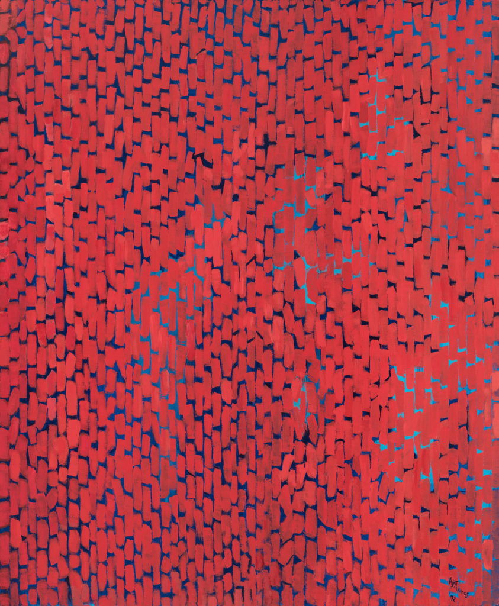

Abstractions in Black: Surveying the Canon
A visual examination of the linkages between black abstractionists working during the Black Arts Movement and contemporary black abstract artists working now.
"Alma Thomas, Mars Dust, 1972"
"Alma Thomas, Mars Dust, 1972"